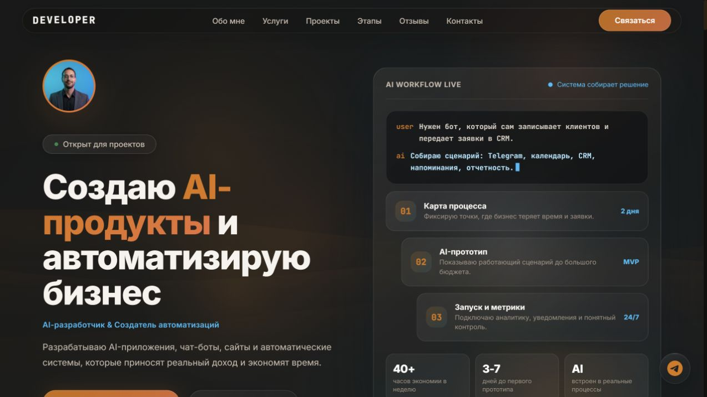

КЕЙС 01 / ПУБЛИЧНЫЙ ПОРТАЛ
DevSavin CRM: портал AI‑автоматизации и услуг
Персональная рабочая витрина: услуги, выбор конфигурации, форма заявки, портфолио и серверный AI‑чат собраны в одном веб‑продукте.
- Задача
- Объяснить сложные услуги через понятный сценарий выбора и сразу принимать обращения.
- Сделано
- Адаптивный портал, интерактивный расчёт, форма, серверная функция чата и отдельный контур CRM.
- Граница
- Отзывы, прогнозные метрики и цены с публичной страницы здесь не используются как подтверждённый опыт.
JavaScriptNode.jsVercelREST APIAI APIадаптивная вёрстка
Открыть DevSavin CRM ↗
